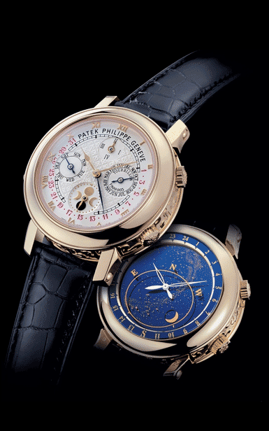

基本信息
编号：5002J黄金
品牌：百达翡丽
系列：超级复杂功能计时
款式：手动机械，42.8毫米，男士
材质：18K黄金
机芯
机芯型号：Cal.R TO 27 QR SID LU CL
出产厂商：百达翡丽
机芯直径：38毫米
摆轮：Gyromax,带有调节砝码的摆轮
振频：21600每小时振荡次数
宝石数：55个
零件数：686个
动力储备：48小时
功能
功能：日期显示 星期显示 月份显示 年历显示 万年历 月相 飞返/逆跳 陀飞轮 三问
外观
表径：42.8毫米
表壳厚度：16.25毫米
表壳材质：18K黄金
表盘颜色：银白色
表盘形状：圆形
表镜材质：蓝宝石水晶玻璃
表冠材质：18K黄金
表带颜色：黑色
表带材质：真皮
表扣材质：18K黄金
介绍
介 绍：Sky Moon Tourbillon Ref. 5002 是百达翡丽制造的最复杂的腕表，也是品牌的第一只双面腕表。 机芯含有 686 个零件，其中部分极其微小。
价格
价格：14,800,000 RMB